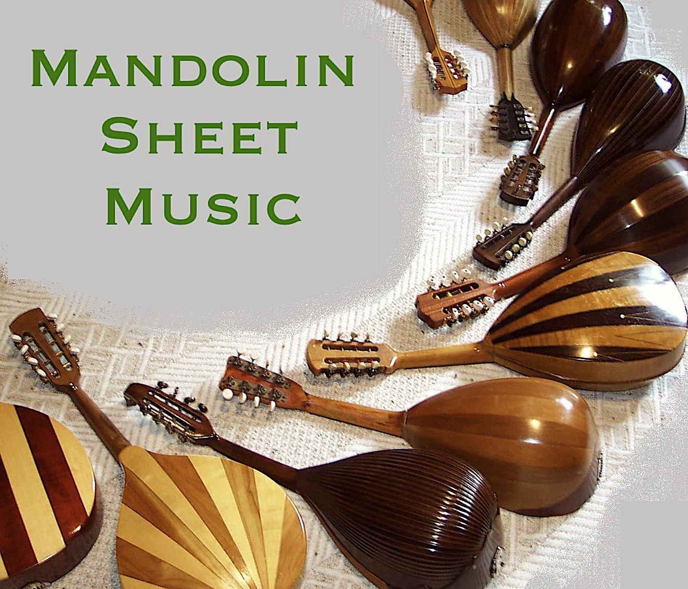

Printed mandolin sheet music was often published by small publishers.
It was mostly not consistently collected by libraries. On this site, I am providing
links to sheet music for plucked string orchestras that is in the public domain
and available on-line.
Mandolin sheet music
From the archives of the
Braunschweig Mandolin Orchestra. The works here should
be in the public domain because their composers died more than 70 years ago and
the publication was more than 50 years ago. My reason for posting these here is
because it is basically impossible to find them anywhere else. If any of these
are actually still copyrighted, please let me know and I will remove them.
|
|

|
Publishers of mandolin sheet music
Links to websites with mandolin sheet music
Classical Mandolin:
- Michael Reichenbach's
site with
links to music by Cristofaro, Munier, Schick, Kollmaneck,
Wohlfahrt and others. Solo mandolin and plucked string orchestra.
His Musicaneo
website.
-
VP Music Media: website with 100s of PDFs of (mostly) Italian guitar and
mandolin music. Solo, duo and orchestral arrangements.
-
Compositions for mandolin/guitar/lute by Calace. (Maybe all of them?)
- IMSLP categories:
mandolin,
guitar,
lute. (100s for mandolin and 1000s for guitar and lute.)
- The late
John Goodin's site (on archive.org) with
links to his own work and works in the public domain including early 20th century
North American music.
- Some
early 20th century mandolin tunes (on archive.org) from USA.
-
Mutopia music for ensembles (Barbella, Gervasio and others)
- The Classical Guitar Library
has a few pages with sheet music for mandolin and guitar or mandolin quartett.
(Mostly Italian pieces from the early 20th century.)
- The University of Rochester Library has some sheet music.
Search for "mandolin".
- The National Library of
Australia has sheet music for mandolin banjo (search for "mandolin" and
select "access": digitised item). Or search several Australian libraries
here.
- Not mandolin, but
zither music from Germany that was played in USA in the early 20th century.
- Japanese
site with lists of mandolin composers and compositions. No sheet music,
but a very comprehensive site.
-
ScorSer Mandolin+Guitar (Munier, Sartori, etc)
- Banjo Sheet Music
Folk and Bluegrass:
- TEF files (on archive.org)
for Bluegrass music. Solo mandolin with guitar chords. A free TEF-file viewer
is available.
- Jan Wolters' arrangements
for mandolin and other instruments (folk songs, children's songs).
- Brian Oberlin's site
(Bluegrass and Fiddle tunes, Christmas songs, chords etc)
Mandolin journals:
In the early 20th century mandolin sheet music was often distributed in monthly or
bi-monthly journals. Each journal contained some information about local
mandolin activities and a few music scores, usually composed by the editor and
his colleagues. Some libraries appear to
have some paper issues of these journals but often incomplete. Some collections have
been digitised, but are difficult to find on the web.
References:
Musikzeitschriften_bis_1945,
The Italian Historical Magazines for Guitar
- Italian:
-
Il Plettro Alessandro Vizzari, M. A. Amadei, Milano, 1906-1943
- Vita Mandolinistica
Sarho Gargano, Bologna, 1901-1910.
- Il Mandolino, G. Monticone, Torino, 1892-1937
(
index)
- Il Concerto, Comellini, Bologna, 1896-1934
- Il Mandolinista Italiano, A. Monzino, Milano, 1912-1934?
- Il Mandolinista, Gustavo Gori, Torino, 1900-?
- Nuova Musica, Ermengildo Carosio, Torino, 1900-1910
- Il Mandolino Romano, Carlo Munier, Giuseppe Branzoli, Roma, 1907-1910
- French:
- L’Orchestre à plectre. Mario Maciocchi. Paris, 1892–1937.
-
L’Estudiantina. M. de Rome, Paris, 1905–1933.
- Le Médiator. A. Moutardeau. Aimé Burlet. Paris, 1910–1913
(index)
- German:
- Die Mandoline. A. Bertinelli. Leipzig, 1904.
- Münchner Zitherfreund/Zitherzeitung. Hans Dondl. München, 1907-1909.
- Mandoline und Gitarre. A. Bertinelli. Leipzig, 1910
- Anzeiger für Musikvereine. Zürich, 1912-1914.
- English:
- The Banjo World. London, 1893-?
Volume 1
- Keynotes. John Alvey Turner, London, 1907-?
- The Mandoline and Guitar. Later: The Minstrel. 1907. London 1906-1907
- The Crescendo American Guild of BMG, Boston, 1908-1927?
Archiving Sheet Music on the Web
Just posting sheet music on a website does not guarantee that it will be available
in the long term. It is probably best to upload materials to
commercial or community maintained archives. The
Internet Archive is the largest non-profit library
that archives web pages and other documents.
It is a good idea to make sure that materials are archived by the Internet Archive
(by searching for it on their site and then uploading it).
It is also possible to upload files directly to that archive.
The biggest sheet music website is IMSLP.
I found its upload procedures somewhat complicated, but it is probably the best
place for scanned sheet music. My own website (the one you are just looking at) is
hosted on Github which is likely to be available
long term. But I don't know whether Github approves of people posting materials
other than software.
With respect to copyright: in most countries sheet music is in the public domain if
the composer and arranger of the music died more than 70 years ago and the
publication was printed more than 50 years ago. In USA, works published before
1929 are in the public domain (otherwise USA copyright law is complicated).
In case the identity of the composer/arranger is unknown, it is in the public
domain 70 years after publication or after it is reasonable to assume that the
author died over 70 years ago. In France and Spain copyright protection can last
longer. In Canada, works whose composers/arrangers died before 1971 are usually
in the public domain. (The main IMSLP servers are
in Canada.) In summary, most works that were composed in the Golden Age
of the mandolin (i.e. 1900-1920) are in the public domain or will be in the
public domain in the near future. The works of the following mandolin composers are still
protected but will be free soon: Kok (died 1954), Maciocchi (1955), Ranieri (1956),
Bitelli (1956).
|